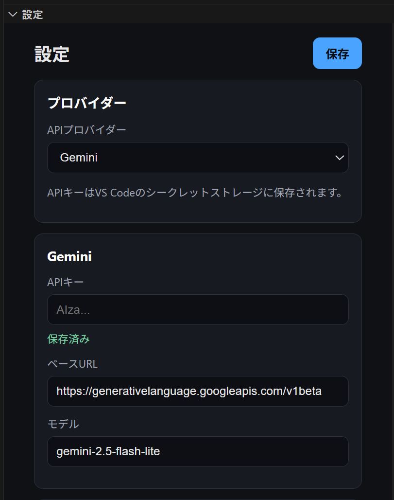
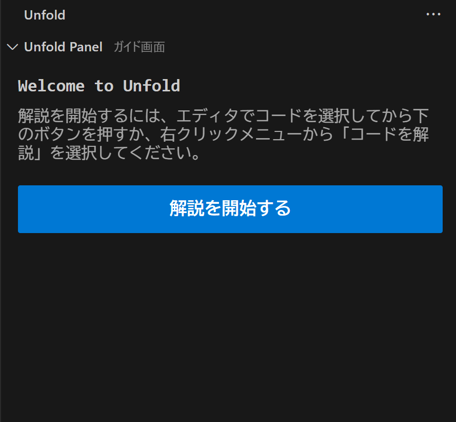

Quick Start
Unfold は、コードを一気に説明するAIではなく、「全体像 → 構造 → 詳細」の順で迷わず読むための学習ツールです。
このページでは、インストールから最初のコード解説を体験するまでの最短手順を案内します。
前提条件
ご利用には以下の環境が必要です。
- VS Code 1.107.0 以上
- 以下のいずれかのAIプロバイダー環境（ご自身で用意する BYOK 形式です）
GeminiのAPIキーOpenRouterのAPIキーOllamaのローカル実行環境
3分で試す手順
インストールから最初の解説を表示するまでの基本ステップです。
1 拡張機能のインストールと初期設定
- VS Code に Unfold 拡張機能をインストールします。
- アクティビティバー（左側のメニュー）から Unfold のアイコンをクリックします。
- サイドバーの Settings（設定） ビューを開きます。
- 使用するプロバイダー（例: Gemini, OpenRouter, Ollama）を選択し、APIキー（またはローカルURLとモデル名）を入力して保存します。

2 コードを解説してみる
- エディタで、解説したいコードファイルを開いた状態にします。
- Unfoldのサイドメニューを開き、
「解説を開始する」 ボタンを押します。

3 ガイドに沿ってコードを読む
生成が完了すると、サイドバーに解説が表示されます。
1. 全体像をつかむ
まずはコード全体の概要が表示されます。
2. 読み始めガイドを選ぶ
「どこから読めばいいか」が提案されるので、推奨されたブロックをクリックして詳細画面に進みます。

3. ドリルダウンで詳細を確認する
ブロック詳細画面では、その部分の詳しい解説が読めます。
処理が複雑な場合は、さらに内部のステップに分けて深掘り（ドリルダウン）することができます。
読み進めると、エディタ上の対象コードも連動してハイライトされます。

よくあるつまずき
うまく動かない場合は、以下を確認してください。
解説が生成されない / エラーになる
Settings ビューで API キーが正しく入力されているか、プロバイダーとモデル名の組み合わせが合っているかを確認してください。
Ollama が動かない
ローカルで Ollama のアプリが起動しているか、指定したモデルが ollama run <model> で手元にダウンロード済みかを確認してください。
うまく説明が分割されない・長すぎる
まずはファイル全体ではなく、1つの「関数」や「クラス」だけを選択して Unfold: Explain Selection を試してみてください。
次のステップ
より詳しい機能一覧や内部の仕組み、今後のロードマップについては以下をご覧ください。